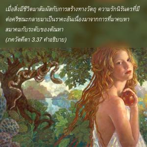
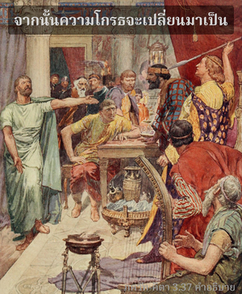

บุคลิกภาพสูงสุดแห่งพระเจ้าตรัสว่า โอ้ อรฺชุน ราคะเท่านั้นที่เกิดจากการมาสัมผัสกับระดับตัณหาทางวัตถุ และต่อมากลายเป็นความโกรธ ซึ่งเป็นศัตรูบาปที่จะเผาผลาญทุกสิ่งทุกอย่างในโลกนี้


เมื่อสิ่งมีชีวิตมาสัมผัสกับการสร้างทางวัตถุ ความรักนิรันดรที่มีต่อองค์กฺฤษฺณกลายเป็นราคะ เนื่องมาจากการที่มาคบหาสมาคมกับระดับของตัณหา หรืออีกนัยหนึ่ง ความรู้สึกรักองค์ภควานฺได้เปลี่ยนแปลงกลายเป็นราคะ เฉกเช่นนมเมื่อมาสัมผัสกับมะขามเปรี้ยวจะกลายเป็นนมเปรี้ยว หรือโยเกิร์ต หลังจากราคะที่ไม่ได้สมดังใจปราถนาก็จะกลายเป็นความโกรธ จากนั้นความโกรธจะเปลี่ยนมาเป็นความหลง และความหลงทำให้การเป็นอยู่ทางวัตถุดำเนินต่อไป ฉะนั้น ราคะจึงเป็นศัตรูที่ยิ่งใหญ่ที่สุดของสิ่งมีชีวิต ราคะเท่านั้นที่ล่อใจให้สิ่งมีชีวิตผู้บริสุทธิ์ยังคงวนเวียนอยู่ในโลกวัตถุ ความโกรธ คือ ปรากฏการณ์ของระดับอวิชชา ระดับเหล่านี้ปรากฏตัวเองออกมาในรูปของความโกรธ และอาการอื่นๆ ในลักษณะเดียวกันนี้ ฉะนั้น หากว่าระดับตัณหาแทนที่จะตกต่ำไปอยู่ในระดับอวิชชา แต่ควรจะพัฒนาให้สูงขึ้นมาสู่ระดับความดีด้วยการใช้ชีวิต และปฏิบัติตนตามวิถีทิพย์ที่กำหนดไว้ เราจะสามารถอยู่รอดปลอดภัยจากการตกลงต่ำอันเนื่องมาจากความโกรธ
องค์ภควานฺทรงแบ่งภาคมากมายเพื่อความสุขเกษมสำราญทิพย์อันหาที่สุดมิได้ของพระองค์ สิ่งมีชีวิตเป็นละอองอณูของความสุขเกษมสำราญทิพย์นี้มีส่วนของเสรีภาพเช่นกัน แต่เมื่อเสรีภาพถูกใช้ไปในทางที่ผิด เมื่อนิสัยชอบรับใช้กลายมาเป็นนิสัยชอบหาความสุขทางประสาทสัมผัส เราจึงมาอยู่ภายใต้อำนาจของราคะ การสร้างทางวัตถุนี้องค์ภควานฺทรงเป็นผู้สร้าง เพื่อเปิดโอกาสให้พันธวิญญาณสนองนิสัยแห่งราคะนี้ และเมื่อกิจกรรมแห่งราคะอันแสนจะยาวนานนี้ทำให้จนปัญญาโดยสิ้นเชิง แล้วสิ่งมีชีวิตจึงเริ่มมีการถามถึงสถานภาพอันแท้จริงของตนเอง
คำถามเช่นนี้คือจุดเริ่มต้นของ เวทานฺต-สูตฺร ซึ่งได้กล่าวไว้ว่า อถาโต พฺรหฺม-ชิชฺญาสา เราควรถามถึงองค์ภควานฺ และคำว่าองค์ภควานฺได้ให้คำนิยามไว้ใน ศฺรีมทฺ-ภาควตมฺ ว่า ชนฺมาทฺยฺ อสฺย ยโต ’นฺวยาทฺ อิตรตศฺ จ หรือ “แหล่งกำเนิดของทุกสิ่งทุกอย่างคือ พฺรหฺมนฺ สูงสุด” ฉะนั้น จุดเริ่มต้นของราคะก็อยู่ในองค์ภควานฺเช่นเดียวกัน หากราคะเปลี่ยนมาเป็นความรักต่อองค์ภควานฺ หรือเปลี่ยนมาเป็นกฺฤษฺณจิตสำนึก อีกนัยหนึ่ง คือปรารถนาทุกสิ่งทุกอย่างเพื่อองค์กฺฤษฺณ เช่นนี้ทั้งราคะและความโกรธจะสามารถเปลี่ยนไปเป็นทิพย์ได้ หนุมานฺ ผู้รับใช้ที่ยิ่งใหญ่ของพระรามได้แสดงความโกรธด้วยการเผาเมืองทองของราวณ (ทศกัณฑ์) การกระทำเช่นนี้ทำให้ หนุมานฺ กลายมาเป็นสาวกผู้ยิ่งใหญ่ที่สุดของพระราม ใน ภควัท-คีตา ก็เช่นเดียวกันองค์ภควานฺทรงแนะนำให้ อรฺชุน ใช้ความโกรธกับศัตรูเพื่อให้พระองค์ทรงพอพระทัย ฉะนั้น ทั้งราคะและความโกรธเมื่อนำมาใช้ในกฺฤษฺณจิตสำนึกจะกลายมาเป็นเพื่อนแทนที่จะเป็นศัตรู